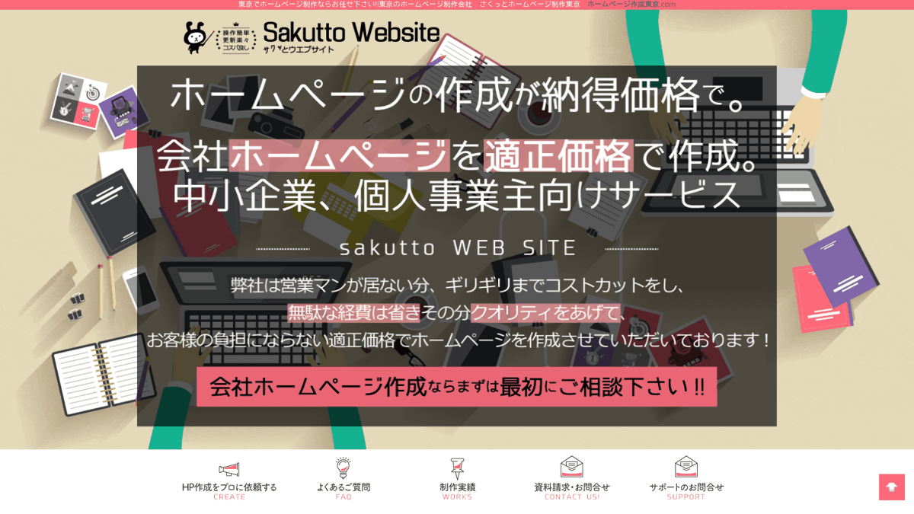
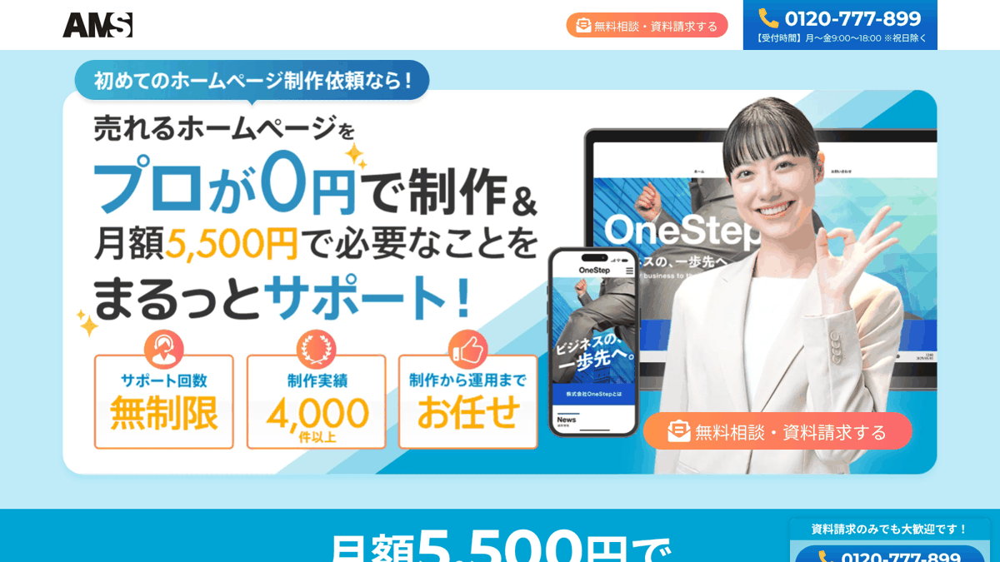
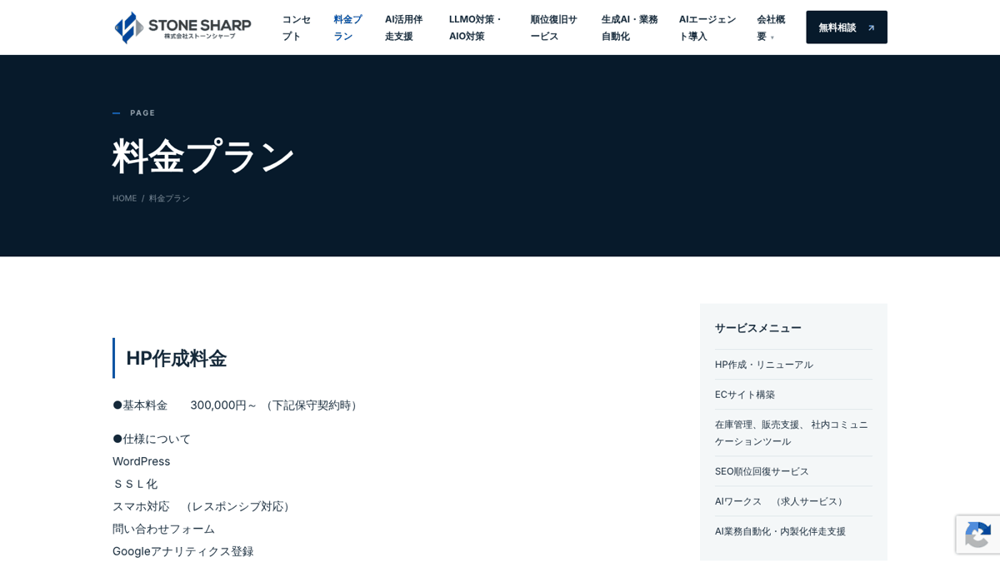

就労継続支援A型（雇用型）は、事業所と利用者が雇用契約を結んで働くサービスです。そのためA型のホームページは、福祉サービスの案内であると同時に、「働く場所」を探している人への求人情報の役割も持ちます。さらに、生産活動の仕事を発注してくれる企業や取引先、利用者を紹介してくれる支援機関も、事業所を知る手がかりとしてホームページを見ます。
加えてA型には、毎年のスコア表（評価点）の公表という、ほかのサービスにはない公表の決まりがあり、公表していないと報酬が減算されます。毎年4月に確実に更新できる仕組みかどうかも、制作会社選びのポイントです。
この記事では、A型事業所のホームページ制作に対応している5社（さくっとホームページ・福祉ITパートナー・AMS・tomonico・ストーンシャープ）について、各社の公式サイトで確認できた料金や更新の方法を比較します。掲載順は、1年間の費用の安い順を基本にしていますが、運営の関連会社である福祉ITパートナーは、先頭にせず2番目に掲載しています。
目次

5社の違いを一覧で比べられます。1年間にかかる費用の目安（初期費用＋月額×12か月）を中心に載せ、内訳は小さく添えています。金額は税込相当（税別表示の会社は10％を加えた額）で、税区分の記載がない会社は表示額のまま載せています。
← 左右にスライドして比較できます →
| 比較項目 | さくっとホームページWordPress・買い切り型 | 福祉ITパートナー低価格・短納期型 | AMS月額制・自社更新型 | tomonico月額保守・更新代行型 | ストーンシャープ集客設計・保守契約型 |
|---|---|---|---|---|---|
| 1年間の費用の目安税込相当・初期費用＋月額×12か月 | 50,000円～制作5万円～（5ページ）。月々の保守料なし。サーバー代は別（税区分は公式サイトに記載なし） | 19,800円～55,000円ライト19,800円／ブランディング55,000円（月額なし。更新を自社で行う場合。税区分は公式サイトに記載なし） | 66,000円初期0円＋月額5,500円×12か月（DMARCオプションは別。下記注記） | 117,480円初期0円＋月額9,790円×12か月（トモニコプラン） | 360,000円～制作300,000円～＋保守（基本）月額5,000円×12か月（税区分は公式サイトに記載なし） |
| 更新の方法 | WordPressで自分で更新（専用マニュアルあり） | 自分で更新できる。更新代行は別途相談 | 独自CMSで自分で更新（電話サポートあり）。代行は有料 | 月額内で更新を代行（5営業日以内が目安） | WordPressで自分で更新。コンテンツ作成の代行プランあり |
| ページ数 | 5ページ～ | ライト1ページ／ブランディングは構成を提案 | 基本5ページ。公開後は自分で無制限に追加可 | 基本7ページ | 公式サイトに記載なし（見積もり） |
| 契約期間 | 長期契約なし（1年毎・月々毎の契約と案内） | 月額契約なし（買い切り） | 最低利用期間なし・違約金なし | 3年（トモニコプラン） | 保守契約が前提（期間は公式サイトに記載なし） |
| A型に関する公式サイトの記載 | 制作実績に千葉市のA型事業所あり | 対応事業所に就労継続支援A型を明記 | 「就労継続支援事業所（A型・B型）」の制作事例ページあり（掲載事例はB型など） | 障害福祉に特化。A型の実績は確認できず（B型の実績あり） | A型・B型のサイト制作の考え方を解説した制作事例ページあり |
| こんな方に | 月額をかけずにWordPressのサイトを持ちたい法人 | 短期間・低予算で公開し、更新は自分で行う事業所 | 月額を抑えつつ、契約の縛りなく始めたい事業所 | 障害福祉に詳しい相手に、更新まで任せたい事業所 | 求人・仕事の受注まで含めて集客を設計したい法人 |
※2026年11月13日に各社の公式サイトで確認した情報です。料金やサービス内容は変更される場合があります。契約前に必ず公式サイトで最新情報をご確認ください。
※AMSは税込表示、tomonicoは税別表示に10％を加えた額です。さくっとホームページ・福祉ITパートナー・ストーンシャープは、公式サイトに税込・税別の記載がなかったため表示額のまま載せています。
※AMSは、なりすまし対策のDMARCオプション（月額1,650円・税込）が標準で付き、6か月は無料・いつでも解約可能と案内されています。7か月目以降も続ける場合、1年目は9,900円が加わります。
※さくっとホームページ・福祉ITパートナーは月額契約がなく、更新代行やサーバー・ドメインの費用は含みません（さくっとホームページはレンタルサーバー年額6,000円のキャンペーンを案内）。
※「A型に関する公式サイトの記載」は、各社の公式サイトで確認できた範囲です。記載がないことは、対応できないという意味ではありません。

1年間の費用は、福祉ITパートナーが19,800円～55,000円、さくっとホームページが50,000円～、AMSが66,000円です。前の2社は月額なし（サーバー等は別）、AMSは月額にサーバー管理などを含みます。
いずれも自分で更新する前提のサービスです。AMSはページを何ページ追加しても月額が変わらず、電話サポートもあります。毎年4月のスコア表の差し替えや、求人の更新を自分たちのタイミングで行えます。
月額の保守費用の中で、文章の書き換えや写真の差し替えを依頼できます。スコア表の差し替えも依頼できるか、反映までの日数とあわせて事前に確認しておきましょう。
制作事例のページで、A型・B型のサイトでは「職員の求人」「仕事をいかに集めるか」「利用者を集める」「事業への想いを伝える」の4つが重要だと解説しています。費用は5社の中で最も高めです。

さくっとホームページ（株式会社TEAM STACCATO）

公式サイトを見る ↗東京都中央区の制作会社で、中小企業・個人事業主向けのホームページ制作を行っています。福祉専門ではありませんが、制作実績に千葉市の就労継続支援A型事業所や、社会福祉法人のホームページが掲載されています。
公式サイトでは「一番ミニマムなHP作成ですと、5万円(5頁)～」と案内されています。税込・税別の記載は確認できませんでした。レンタルサーバーは年額6,000円のキャンペーン価格を案内しています（キャンペーンのため変更の可能性があります）。
メリット
- WordPressで制作し、専用マニュアルも作成。納品後は自分で更新でき、月々の保守料が不要と案内している
- 5年リースのような長期契約はなく、1年毎・月々毎の契約と案内している
- 見積もり以上の金額は請求せず、追加費用が必要な場合は事前に伝えると案内している
- ドメイン取得やレンタルサーバーの用意も依頼できる
注意点
- 税区分、ページ追加の料金、制作期間は公式サイトで確認できなかった
- 保守料がない分、WordPressの更新やバックアップを誰が行うかを決めておく必要がある
- 中小企業向けの全業種のサービスで、福祉の専門知識をうたうものではない
- 無料の説明訪問は東京都・神奈川県内が対象
こんな方におすすめ
月額費用をかけずにWordPressのサイトを持ちたい事業所、更新を自分たちで行える職員がいる事業所
福祉ITパートナー
 公式サイトを見る ↗
公式サイトを見る ↗
福祉・介護・医療分野のホームページ制作と、IT活用の支援を行っています。料金ページでは、対応する事業所として就労継続支援A型・B型などを挙げています。なお、当サイトの運営者は同社の関連会社です。他社と同じ基準で確認し、掲載しています。
おまかせライトは1ページ構成（制作中の修正1回まで）、ブランディングは事業所に合わせて構成を提案（修正3回まで）です。2026年11月13日時点の料金ページには、2プランの金額について税込・税別の記載がありませんでした。サーバー契約・ドメイン取得・公開作業は基本料金に含まれません。
メリット
- 1年間の費用が5社の中で最も低く、月額契約もない
- 素材がそろえば最短48時間からと、制作期間が短い
- スマホ対応、基本のSEO設定、Googleマップの設置が両プランに含まれる
- ブランディングプランでは、文章の整理・言い換えや写真の調整まで相談できる
注意点
- ライトは1ページのみで、問い合わせフォームは付かない（導線の設置のみ）。スコア表や求人、企業向けの情報を分けて載せたい場合はブランディングで構成を相談する
- サーバー・ドメインの契約と公開作業は別で、実費は自分で確認する必要がある
- 公開後の更新代行は、必要に応じて別途相談となる（金額の記載なし）
- 公式サイトで確認できた制作実績の例は就労継続支援B型とグループホームで、A型の実績例は確認できなかった
こんな方におすすめ
短期間で公開したい事業所、月額費用をかけずに始め、更新は自分たちで行える事業所
AMS（株式会社AMS）

公式サイトを見る ↗石川県金沢市の会社で、独自開発のCMS「AMS」を使った月額制のホームページ制作・運用を行っています。業種を問わないサービスですが、公式サイトに「就労継続支援事業所（A型・B型）」の制作事例ページがあり、B型・生活介護・就労移行支援などの事業所のサイトが紹介されています。
基本となる5ページの制作費は0円で、月額5,500円（税込）にドメイン取得、サーバー管理、セキュリティ対策、問い合わせフォーム、アクセス解析などが含まれると案内されています。最初から6ページ以上をまとめて制作する場合などは、別途制作費がかかることがあります。DMARCオプション（月額1,650円・税込、6か月無料・いつでも解約可）が標準で付きます。
メリット
- 最低利用期間や解約時の違約金がなく、いつでも解約できる
- 公開後は自分でページを追加でき、何ページ増やしても月額は変わらない
- 機械が苦手な人向けに電話サポートがある
- 急ぎの場合は最短2～3営業日で仮公開できると案内している（本公開まではおおよそ1～2か月）
注意点
- 更新は自分で行うスタイルが基本で、代行は有料
- 独自開発のCMSのため、解約後に別の会社へ移る場合のデータの扱いは事前に確認したい
- 制作事例ページで確認できた事例はB型・生活介護・就労移行支援などで、A型の事業所かどうかは確認できなかった
- 全業種向けのサービスで、福祉の専門知識をうたうものではない
こんな方におすすめ
月額を抑えつつ契約の縛りなく始めたい事業所、求人やお知らせを自分たちで頻繁に更新したい事業所
tomonico
 公式サイトを見る ↗
公式サイトを見る ↗
障害福祉事業所に特化したホームページ制作と更新代行を行う会社です。公式サイトによると代表自身が障害当事者で、制作から更新の依頼まで、すべてオンラインで進めます。制作実績には就労継続支援B型の事業所が掲載されていますが、A型の実績は確認できませんでした。
公式サイトの表示は税別で、トモニコプランは月額8,900円（3年間）です。ほかに、ミドルプラン（初期189,000円・月額5,000円）、フリープラン（初期298,000円・保守契約なし）があります。
メリット
- 月額の保守費用の中で、文章の書き換え・写真の差し替え・簡易なレイアウト変更を依頼できる
- お問い合わせフォーム、Googleマップ表示、ブログ、基本のSEO対策、Googleビジネスプロフィールの基本設定が全プランに含まれる
- ブログやお知らせは、希望すれば自社でも更新できる設計にできる
- 障害福祉の分野に特化しており、制度の話が通じやすい
注意点
- トモニコプランは3年契約で、月額費用がずっと続く（4年目以降は月額3,900円（税別）の契約に変更可）
- 基本は7ページ程度で、超える場合は1ページごとに追加費用がかかる
- 更新の反映は土日祝を除く5営業日以内が目安。スコア表の公表期限（原則4月中）に間に合うよう、早めの依頼が必要
- 制作期間の目安は、公式サイトで確認できなかった
こんな方におすすめ
障害福祉に詳しい相手に制作から更新まで任せたい事業所、毎月の費用を定額にしたい事業所
株式会社ストーンシャープ

公式サイトを見る ↗岡山のWeb制作・コンサルティング会社で、SEOや地図検索の対策、AI活用の支援も行っています。制作事例のページで、A型・B型の就労継続支援サイトの制作依頼を複数受けてきたと紹介し、職員の求人、仕事の集め方、利用者の集め方、事業への想いの伝え方という4つの視点を解説しています。
料金ページでは、HP作成の基本料金は300,000円～（保守契約時）で、WordPress・SSL化・スマホ対応・問い合わせフォーム・Googleアナリティクス登録・Googleマップ登録を含み、ディレクション費用は別とされています。保守は基本代金月額5,000円（サイトバックアップ月1回）、保守月額10,000円（データベースのバックアップも月1回）、保守とSEOコンサルティングの集客パック2が月額30,000円です。税込・税別の記載は確認できませんでした。
メリット
- A型・B型のサイトで、利用者・家族・支援機関・取引先など複数の相手に向けて情報を整理する考え方を示している
- WordPressで制作し、お知らせなどを自分たちで素早く更新できる方針
- 保守契約でバックアップや不具合時の復旧に対応する
- SEOコンサルティングや、ブログ・コンテンツ作成の代行プランもある
注意点
- 5社の中で1年間の費用が最も高く、ディレクション費用は別
- 保守契約が基本で、月額費用が続く（契約期間は公式サイトに記載なし）
- ページ数や制作期間は公式サイトで確認できず、見積もりになる
- 現在はAI活用支援なども手がけており、Web制作の詳しい内容は問い合わせて確認したい
こんな方におすすめ
利用者募集だけでなく、職員採用や生産活動の仕事の受注まで含めてホームページを設計したい法人

A型では、毎年のスコア表の公表に加えて、求人や生産活動の案内など、更新したい情報が多くあります。3年間の目安とあわせて、誰がどうやって更新するかを比べましょう。
← 左右にスライドして比較できます →
| 比較項目 | さくっとホームページ5ページ～ | 福祉ITパートナーライト／ブランディング | AMS基本料金 | tomonicoトモニコプラン | ストーンシャープ基本料金＋基本保守 |
|---|---|---|---|---|---|
| 1年間の費用の目安税込相当・初期費用＋月額×12か月 | 50,000円～月々の保守料なし。サーバー代は別 | 19,800円～55,000円月額なし。更新を自社で行う場合 | 66,000円初期0円＋月額5,500円×12か月 | 117,480円初期0円＋月額9,790円×12か月 | 360,000円～制作300,000円～＋月額5,000円×12か月 |
| 3年間の目安 | 50,000円～＋サーバー代 | 19,800円／55,000円 （公開後の更新を自社で行う場合） |
198,000円 | 352,440円 | 480,000円～ |
| サーバー・ドメイン | 依頼可能（サーバーは年額6,000円のキャンペーンを案内） | 基本料金に含まれない（自分で契約） | 月額にドメイン取得・サーバー管理を含む | 契約をサポート（実費の扱いは要確認） | 公式サイトで要確認 |
| 保守・バックアップ | 月々の保守料なし（保守の範囲は要確認） | 公開後の保守は別途相談 | 月額にセキュリティ対策を含む | 月額保守に含む | 基本保守でサイトバックアップ月1回 |
| 追加費用がかかるもの | 公式サイトに記載なし（見積もり以上は請求しないと案内） | 公開作業、公開後の更新代行（相談） | 6ページ以上の初回制作、更新代行、DMARCオプション（7か月目以降） | 8ページ目以降の追加ページ、大きなレイアウト変更 | ディレクション、コンテンツ作成（1ページ30,000円～） |
※1年目＝初期費用＋月額×12か月、3年間＝初期費用＋月額×36か月です。tomonicoは税別表示の月額8,900円に10％を加えた9,790円で計算しています。
※ストーンシャープの3年間は、基本料金300,000円＋基本代金の保守月額5,000円×36か月で計算しています。
※さくっとホームページのサーバー代（年額6,000円）はキャンペーン価格のため、3年間の金額には含めていません。
A型ならではの費用の見方
- 毎年4月のスコア表の更新：スコア表は原則4月中に公表し、指定権者へ報告する必要があります。自分で更新するなら操作の手順を、依頼するなら反映までの日数と費用を確認しておきましょう。
- 求人ページの更新頻度：A型では利用者自身が「働く人」として応募してきます。募集の状況は変わりやすいため、求人ページを自分で更新できるかどうかで、毎月の手間と費用が変わります。
- 保守の中身：月額が0円でも、WordPressの更新やバックアップを誰が担うかが決まっていないと、改ざんなどのリスクが残ります。保守の範囲を書面で確認しましょう。
WordPressの保守については「WordPressセキュリティ対策チェックリスト」、費用の考え方は「福祉事業所のホームページ制作費用の相場」で解説しています。

A型のホームページを見る人は、働きたい本人、家族、相談支援専門員やハローワークなどの支援機関、仕事を依頼する企業、そして職員の求職者と、立場がさまざまです。誰に向けた情報かを分けて整理しましょう。
1．スコア表の公表ページ
A型事業所は、国の留意事項にそって作成したスコアの合計点と詳細（スコア表）を、原則4月中に公表し、指定権者へ報告します。神戸市の案内では、未公表の場合は利用者全員について所定単位数の15％が減算されるとされています。
載せたい内容
- スコア表（所定の様式）と公表日
- 地域連携活動や、利用者の知識・能力の向上のための支援を行っている場合は、その報告書（公表がないと該当の項目を算定できない）
- 経営改善計画書を作成している場合は、あわせて公表することが望ましいとされている
新規指定の事業所は、初年度（年度途中の指定は2年度目まで）はスコアを算出できないため公表不要とされています。詳しくは指定権者の案内を確認してください。
2．「働く場所」としての情報
A型は、雇用契約にもとづいて働くサービスです。利用を考える人は、福祉サービスを探すと同時に、職場を探しています。
載せたい内容
- 勤務日・勤務時間の例（短時間から始められるかなど）
- 賃金の考え方や、雇用契約の内容の概要
- 職場の雰囲気がわかる写真（本人の同意を得たもの）
3．仕事（生産活動）の内容
「どんな仕事をするのか」は、本人にとっても家族にとっても大きな判断材料です。
載せたい内容
- 主な仕事の種類と、1日の流れ
- 苦手なことへの配慮や、仕事の切り出し方の工夫
- 一般企業への就職を目指す人への支援
4．企業・取引先向けの情報
生産活動の仕事を安定して確保することは、A型の運営に直結します。発注を考える企業が知りたい情報もまとめておきましょう。
載せたい内容
- 請け負える仕事の内容と、品質・納期への取り組み
- これまでの取引の例（先方の了承を得たもの）
- 見積もり・相談の窓口
5．利用までの流れと対象となる方
厚生労働省の説明では、A型の対象は、企業等に就労することが困難な人で、雇用契約にもとづいて継続的に働くことが可能な人とされています。
載せたい内容
- 見学・体験・面接 → 受給者証の申請 → 雇用契約・利用開始のステップ
- 相談支援専門員やハローワークなど、関係機関向けの連絡先
6．読みやすさへの配慮
神戸市の案内では、公表した内容について、テキストデータへの変換や読み仮名付きの資料の作成など、情報のアクセシビリティに配慮することが望ましいとされています。
意識したいこと
- スコア表をPDFの画像だけにせず、要点を本文でも説明する
- 専門用語を言い換え、必要に応じてふりがなを付ける
詳しくは「福祉事業所のウェブアクセシビリティ」をご覧ください。
B型も運営している場合は「就労継続支援B型向けホームページ制作会社比較」、A型とB型の違いは「就労継続支援A型とB型の違い」、職員の採用ページは「福祉事業所の採用ページ設計」も参考にしてください。

就労継続支援A型のホームページは、利用者募集・求人・取引先への案内・スコア表の公表と、役割の多いホームページです。初期費用だけでなく、毎年の公表や求人の更新を、誰がどうやって続けるかを基準に選びましょう。
- 月額をかけずにWordPressのサイトを持ちたい → さくっとホームページ（サーバー代は別）
- 1年間の費用を最も抑え、短期間で公開したい → 福祉ITパートナー（更新は自分で）
- 月額を抑えつつ、契約の縛りなく始めたい → AMS（更新は自分で、代行は有料）
- 障害福祉に詳しい相手に、更新まで任せたい → tomonico（3年契約）
- 求人や仕事の受注まで含めて設計したい → ストーンシャープ（費用は高め）
どの会社を選ぶ場合も、スコア表を4月中に確実に公表できる手順と、サーバー・ドメインの名義、保守の範囲を契約前に確認しておくことが、減算やトラブルを防ぐ第一歩です。
7．よくある質問
スコア表は、PDFを載せるだけでよいですか？
所定の様式で公表することが基本ですが、神戸市の案内では、テキストデータへの変換など、情報のアクセシビリティに配慮することが望ましいとされています。PDFに加えて、合計点や主な取り組みを本文でも短く説明しておくと、利用を考える人や家族にも伝わりやすくなります。公表方法の詳細は、指定権者の案内に従ってください。
スコア表の公表は、毎年いつまでに行えばよいですか？
神戸市の案内では、原則4月中に公表し、その旨を市へ報告するよう求めています。報告の方法や期限は指定権者によって異なるため、所管の自治体の案内を確認しましょう。ホームページの更新を制作会社に依頼している場合は、反映までの日数を見込んで早めに準備することが大切です。
求人サイトに載せていれば、ホームページの求人ページは不要ですか？
求人サイトは多くの人の目に触れる一方、掲載できる情報量や表現に限りがあります。ホームページの求人ページでは、仕事の内容や職場の雰囲気、支援の方針などを詳しく伝えられ、求人サイトから事業所名で検索してきた人の判断材料にもなります。両方を使い分けるのがおすすめです。
月額制と買い切り、A型にはどちらが向いていますか？
求人やスコア表などを自分たちで更新できる職員がいれば、買い切り型や自社更新型で月額を抑えられます。ただし、WordPressの場合は保守（ソフトの更新やバックアップ）を誰が担うかを決めておく必要があります。更新や保守をまとめて任せたい場合は、月額制で依頼できる範囲と反映までの日数を確認しましょう。
本記事の比較について

本記事は、各社の公式サイトで公開されている情報をもとに、料金・特徴・更新の方法などを比較しています。確認日は2026年11月13日です。制度については、神戸市「【就労継続支援A型事業所】スコア表の公表及び報告」と、厚生労働省「障害福祉サービスについて」を参照しました。
金額は税込相当に統一し、税別表示の会社は10％を加えた額で計算しています。税区分の記載がない金額は、その旨を注記しています。掲載順は、1年間の費用の安い順を基本としていますが、運営の関連会社である福祉ITパートナーは、先頭にせず2番目に掲載しています。
当サイトは、掲載企業の一社である福祉ITパートナーの関連会社が運営しています。同社も他社と同じ基準で確認・掲載しており、広告費・紹介料は受け取っていません。
料金やサービス内容は各社の都合により変更される場合があります。最新の情報は、各社の公式サイトで直接ご確認ください。